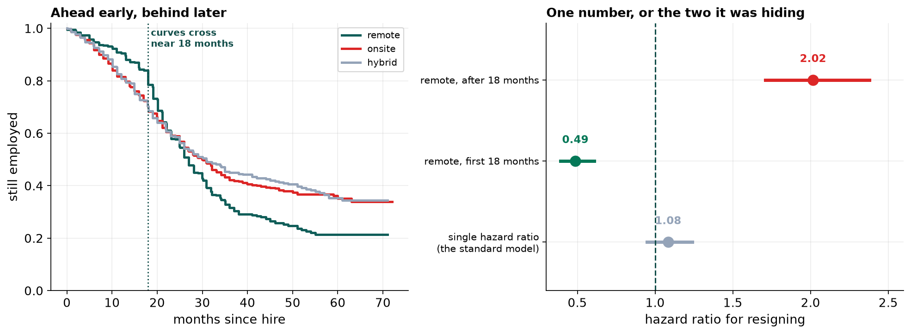

- Setting
- A software services firm. Everyone hired between January 2020 and a cut-off of 1 January 2026, with their department, job level, salary position, manager history and work mode.
- The question
- How long do people stay, which teams keep them, and does working remotely make any difference? A remote-work policy decision is waiting on the last one.
- Why it matters
- HR currently reports mean tenure among people who left. That figure is 19.1 months and it is not an estimate of how long people stay. It is an estimate of how long the ones who have already gone lasted, which is a different and much shorter thing.
- What we do
- Build the survival curve properly, compare departments, test the remote-work policy three ways, and find out why two of the three answers are wrong.
An employee hired thirty months ago who is still here has not given us a tenure. They have given us a lower bound, which is a real observation with a real value, and the entire chapter is about tools that can use one.
Censoring Is Not Missing Data
The previous chapter was about rows with a gap in them. This looks like the same problem and is not, and the difference decides what you are allowed to do.
| A missing BMI | A censored tenure | |
|---|---|---|
| The value | Exists, and was not recorded | Does not exist yet |
| What you know | Nothing about it directly | That it is greater than the follow-up so far |
| Can you impute it? | Yes, from the other columns | No. There is nothing yet to impute |
| Can you drop it? | Only at a cost | Only at a much larger one |
Of 3,191 employees, 1,375 resigned, 83 were let go and 1,733 were still employed at the cut-off. For the question being asked, resignation, that leaves 56.9 percent censored. Those people are not missing from the study. They are the study.
![Four panels. Top left: a sample of employees drawn as horizontal lines from hire date to either a resignation dot or the cut-off arrow, forming a triangular shape with a hard vertical edge at the January 2026 cut-off. Top right: a stacked histogram of months observed, split into resigned and censored, where the censored portion dominates. Bottom left: the Kaplan-Meier survival curve with a confidence band, a dotted line at the median of 29 months and a dashed red line at the 19 months HR reports. Bottom right: five survival curves by department, with Platform's curve stopping at 18 months but sitting highest.](../assets/img/capstone-survival-firstlook.png)
The Number HR Reports
The reported figure is not a bad estimate of how long people stay. It is a good estimate of something else: the average tenure of the subset who have already gone, which is guaranteed to be short because anyone who stays a long time has not entered the average yet.
Kaplan-Meier asks a different question at each month: of the people still here at the start of it, what fraction left during it? Someone censored at month 30 contributes to every one of those questions up to month 30 and to none afterward. Nothing is dropped and nothing is invented. Survival at twelve months is 84.2 percent, at twenty-four 58.5 percent and at thirty-six 41.4 percent.
The Department That Looks Worst
| Department | Mean tenure at exit | Resignation rate | Mean follow-up | Still there at 12 months |
|---|---|---|---|---|
| Platform | 6.9 mo | 5.3% | 8.9 mo | 93.4% |
| Customer Support | 18.0 mo | 60.0% | 20.7 mo | 75.6% |
| Operations | 19.6 mo | 44.2% | 24.8 mo | 85.0% |
| Sales | 19.6 mo | 53.8% | 22.1 mo | 83.7% |
| Engineering | 19.8 mo | 40.1% | 25.3 mo | 86.5% |
Platform is bottom of the first column and top of the last. On the number HR reports its people last 6.9 months against roughly nineteen everywhere else, which reads as a team in crisis. On a survival curve, 93.4 percent of its hires are still there at twelve months, the best retention in the company.
Both figures are arithmetically correct. Platform was created eighteen months before the cut-off, so its mean follow-up is 8.9 months and only 5.3 percent of its people have resigned at all. The few who did leave left early, because leaving late was not yet possible. The naive statistic measures how long a department has existed at least as much as it measures whether people stay.
Two Summaries That Agree, and Are Wrong
The policy question is whether remote work affects retention. The two standard tools both say no.
| Method | Result | Reading |
|---|---|---|
| Log-rank test, remote against onsite | chi-square 1.92, p = 0.165 | no evidence of a difference |
| Cox regression, adjusted | hazard ratio 1.08, p = 0.238 | no evidence of a difference |
And then the survival curves, which are what those two numbers were summarizing.
| Months since hire | Remote | Onsite | Gap |
|---|---|---|---|
| 12 | 90.9% | 81.6% | +9.2 points |
| 18 | 84.0% | 70.3% | +13.7 points |
| 24 | 57.9% | 59.1% | -1.2 points |
| 36 | 32.8% | 43.2% | -10.4 points |
| 48 | 25.7% | 38.2% | -12.5 points |
The curves cross between eighteen and twenty-four months. The log-rank test accumulates the difference between them across the whole of follow-up, so when a group is ahead early and behind later the two halves cancel. A p-value of 0.165 here does not mean nothing is happening. It means the two things that are happening point in opposite directions.
The Assumption Behind the Hazard Ratio
Everything Cox reports as a single hazard ratio rests on proportional hazards: the assumption that a covariate's multiplier is the same at month 3 as at month 40. It is not a technicality and it is testable. Correlate each covariate's residuals with time, and a non-zero correlation means the effect is moving.
That is not a marginal warning. It is the model saying that the number it just printed for remote work is not a constant and should not be read as one. The check takes one line and it is the difference between the wrong answer and the right one.
Letting the Effect Change With Time
Splitting each employee's follow-up at eighteen months turns 3,191 people into 4,761 rows. Someone who lasted thirty months contributes one row covering months 0 to 18, in which they were remote-and-early, and a second covering months 18 to 30, in which they were remote-and-late. The resignation is attached to whichever row it happened in. Nobody is counted twice.
| Estimate | Hazard ratio | 95% CI | |
|---|---|---|---|
| Single hazard ratio, as first reported | 1.08 | 0.95 to 1.24 | p = 0.238 |
| Remote, first 18 months | 0.49 | 0.39 to 0.61 | resign at half the onsite rate |
| Remote, after 18 months | 2.02 | 1.71 to 2.38 | resign at twice the onsite rate |

A factor of four separates the two regimes, and it was reported as 1.08. Nothing about the earlier answers was a computational error. A hazard ratio and a log-rank statistic both compress the whole of follow-up into one number, and when the truth reverses partway through, the one number that fits it is roughly no effect.
Three Analyses, Three Answers
There is a third way to get this wrong, and it is the most confident of the lot. Analyze only the 1,375 people who resigned, which discards 1,816 employees, and remote workers appear to have stayed 3.8 months longer, significant at any threshold.
| Analysis | What it says | What it would recommend |
|---|---|---|
| Leavers only | remote stay 3.8 months longer | expand remote work |
| Log-rank and Cox | no difference, p = 0.17, HR 1.08 | the policy is irrelevant |
| Time-varying Cox | HR 0.49, then 2.02 | keep it, and act at eighteen months |
The first is wrong for the same reason the naive tenure figure was. The leavers are not a sample of employees, they are a sample of endings, and which endings have happened yet depends on when people were hired and how long they were going to last.
Only the last analysis used every employee. What it recommends is not a policy reversal but something specific at around the eighteen-month mark for remote employees, and a measurement of whether that moves the second hazard ratio.
What This Does Not Settle
Involuntary exits were treated as censoring. Eighty-three people were let go, and the analysis assumes that being let go says nothing about whether that person was about to resign. If the two are related, and they plausibly are, every hazard ratio here is somewhat off. The proper treatment is a competing-risks model that estimates both events.
Eighteen months was chosen by looking at the curves. The split point was picked after seeing where they crossed, which makes the two hazard ratios a little sharper than an honest out-of-sample estimate would be. A pre-registered split, or a smooth time-varying coefficient, would give some of that back.
Sales also fails the proportional-hazards test, at p = 0.006 with a statistic nine times smaller than remote work's. It is small enough that a single hazard ratio is a fair summary and large enough to mention.
Nobody hired before 2020 is in this file. Everything here describes people hired into the company as it has been for six years and says nothing about the people who were already there, who are exactly the long-tenure employees a retention study would most want.
This is an observational comparison. Nobody was assigned to remote work at random. Whatever leads a person to choose it travels with them into the hazard ratio.
What to Watch
- ✓Never average the durations of the ones that ended. Mean time-to-event among those who experienced the event is short by construction, and the more censoring there is the shorter it gets. It is the single most common error in this area.
- ✓Check how long each group has been observed before comparing them. A team, cohort or product line that is younger than the others will look worse on any duration statistic and better on any rate statistic, regardless of what is actually happening.
- ✓Plot the curves before running the test. The log-rank test has almost no power against curves that cross, and will report no difference where the difference is large and reverses.
- ✓Test proportional hazards on every Cox model. One line of code. If a covariate fails, its hazard ratio is an average of a changing effect and should not be quoted as a constant.
- ✓Split follow-up when an effect moves. Episode splitting is simple, uses every subject, and turns an uninterpretable average into two numbers a decision can be made on.
- ✓Say what you treated as censoring. Competing events are not censoring, and calling them that quietly assumes they are unrelated to the event you care about.
Time-to-Event in Data Science & AI
Anywhere the outcome is when rather than whether, and the observation window ends before everyone has had their turn, this is the right toolkit and a classifier is the wrong one.
| Where it appears | The event | What censoring looks like |
|---|---|---|
| Subscription churn | Cancellation | Customers still subscribed at the extract date |
| Credit risk | Default | Loans still performing, and loans repaid early, which is a competing risk |
| Predictive maintenance | Component failure | Machines still running, and machines replaced on schedule |
| Clinical trials | Death, relapse, recovery | Patients still alive at the analysis date, and patients lost to follow-up |
| Product analytics | Time to first purchase, time to activation | Users who have not done it yet, who are most of them |
The common failure is to turn the question into a classifier. Predicting "will this customer churn in the next 90 days" throws away when, discards everyone whose 90 days is not yet complete, and relabels the same customer differently depending on when the snapshot was taken. A survival model answers the question the business asked, which is usually how long, and gives a curve rather than a probability.
Edward Kaplan and Paul Meier published the product-limit estimator in 1958, and it remains one of the most cited papers in all of statistics. Nathan Mantel and others developed the log-rank test through the 1960s. David Cox's 1972 proportional hazards paper made it possible to adjust for covariates without specifying the shape of the baseline hazard at all, which is why it became the default. David Schoenfeld's 1982 residuals gave the assumption behind it a test, and the modern extensions are competing risks, through the Fine and Gray subdistribution hazard, and machine-learning survival models such as random survival forests and DeepSurv, all of which inherit the same requirement to handle censoring correctly.
The full project, step by step
The companion notebook repairs four faults in the HR export, builds tenure and the censoring indicator from hire and exit dates, contrasts the reported figure with the Kaplan-Meier curve, works through the department that looks worst and is best, runs the log-rank test and a Cox model, tests proportional hazards, splits follow-up at eighteen months to recover the two hazard ratios, and finishes by showing what a leavers-only analysis would have recommended.
The dataset
(capstone-survival-analysis-time-to-event.xlsx) holds 3,200 employees as the HR export
arrived, with duplicated rows, a department renamed mid-period, nine exit dates before their hire dates
and a work-mode column with gaps. Two written reports accompany it: a plain-language brief
for the people director, and a technical report covering the estimator, the tests and the
time-varying model.
🎓 Key Takeaways
- ✓Censoring is not missing data. A censored tenure is a value that does not exist yet, and what you know about it, that it exceeds the follow-up so far, is real information that neither imputation nor deletion can use.
- ✓Averaging the ones that ended understates by a third. HR's 19.1 months against a Kaplan-Meier median of 29.0, because anyone who stays a long time has not entered the average yet.
- ✓A young department looks like a failing one. Platform showed 6.9 months mean tenure at exit, the worst in the company, and 93.4 percent twelve-month survival, the best.
- ✓The log-rank test is near-blind to crossing curves. Remote against onsite returned p = 0.165 while the two curves were 13.7 points apart at eighteen months and 12.5 points apart the other way at forty-eight.
- ✓The proportional-hazards test caught it. Remote work returned a statistic of 67.5 against p < 0.0001 while every other covariate passed, which is the model refusing to stand behind its own hazard ratio.
- ✓Splitting follow-up at eighteen months recovered 0.49 and 2.02, a factor of four that had been reported as 1.08. Three analyses of the same file recommended expanding remote work, ignoring it, and managing it at the eighteen-month mark.